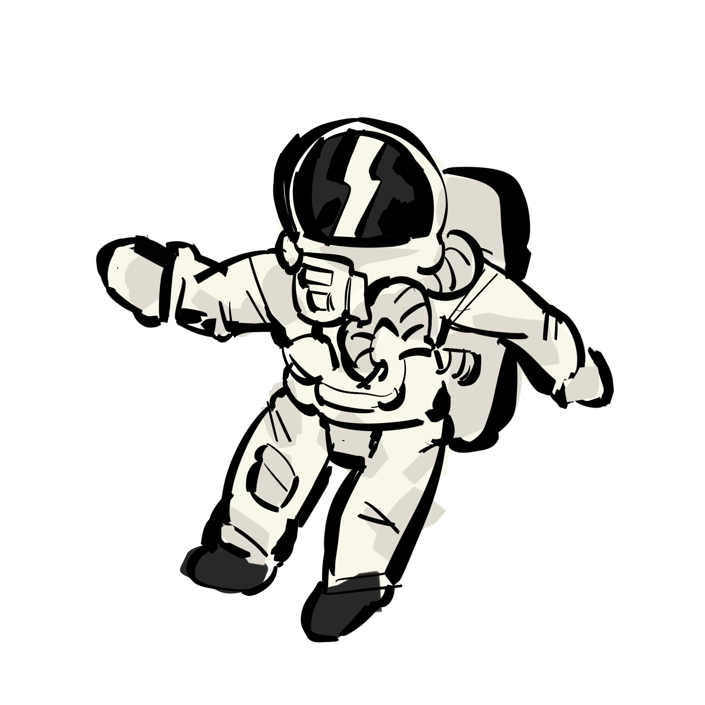
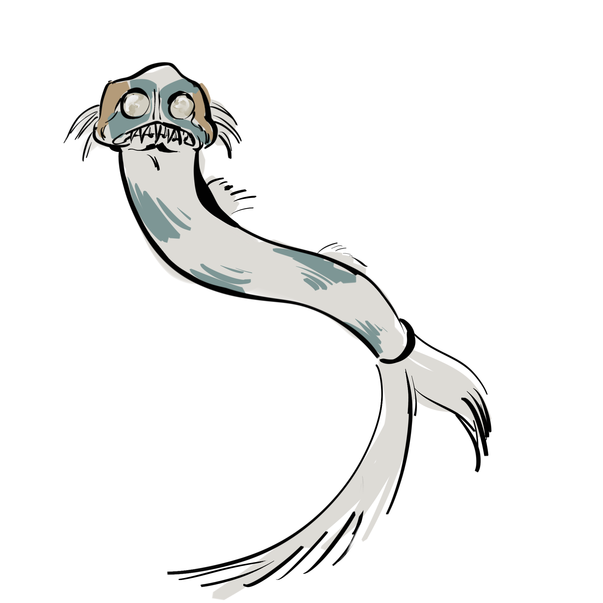
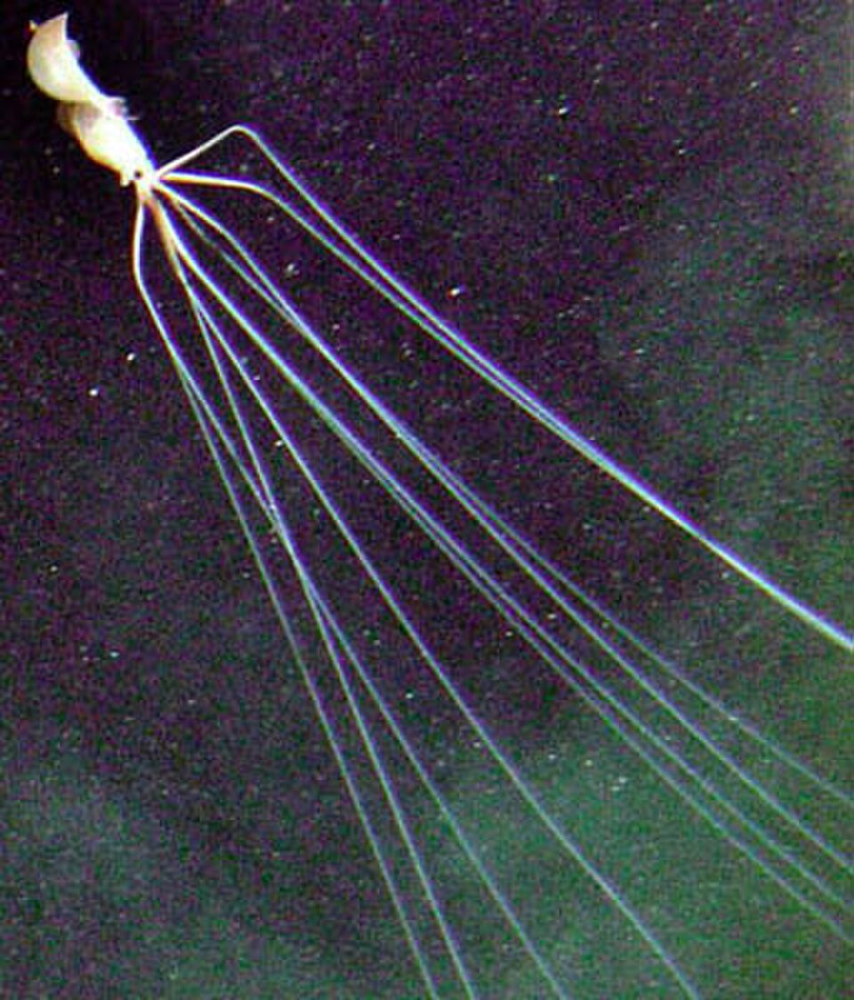

lysanne's corner
Ik heb de diepzee altijd erg facinerend gevonden, er is weinig over bekend en de dieren die hier leven, door de extreme omstandigheden zijn ze ook erg apart geevolueerd. Zelf vind ik het een beetje buitenaards.
Op deze site kan je de dieren die hier leven ontdekken door op ze te klikken.


